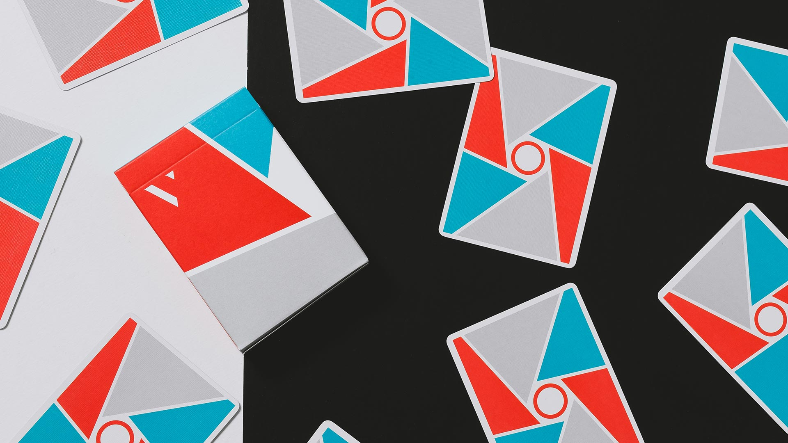

Sección de Cardistry
Virtuoso Deck
Una de las mejores barajas para cardistry, salen a la venta una vez por año con un diseño único que no volvera a imprimirse jamas, lo que hace que cada una de estas sea de coleccion, el acabado qeu tiene y el material hacen que esta baraja sea exageradamente durable- 
-